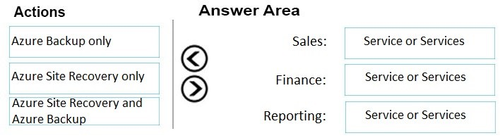
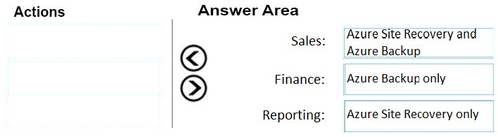
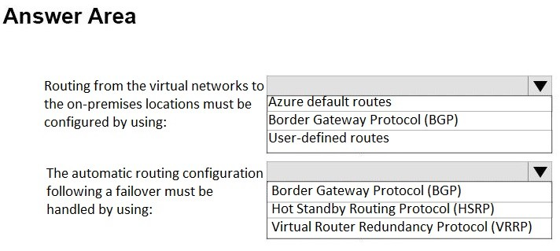
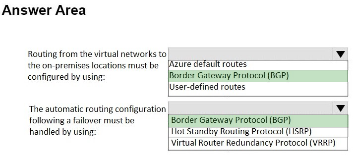

DRAG DROP -
Your company identifies the following business continuity and disaster recovery objectives for virtual machines that host sales, finance, and reporting applications in the company's on-premises data center:
✑ The finance application requires that data be retained for seven years. In the event of a disaster, the application must be able to run from Azure. The recovery time objective (RTO) is 10 minutes.
✑ The reporting application must be able to recover point-in-time data at a daily granularity. The RTO is eight hours.
✑ The sales application must be able to fail over to a second on-premises data center.
You need to recommend which Azure services meet the business continuity and disaster recovery objectives. The solution must minimize costs.
What should you recommend for each application? To answer, drag the appropriate services to the correct applications. Each service may be used once, more than once, or not at all. You may need to drag the split bar between panes or scroll to view content.
NOTE: Each correct selection is worth one point.
Select and Place:

Correct Answer:

You plan to move a web application named App1 from an on-premises data center to Azure.
App1 depends on a custom COM component that is installed on the host server.
You need to recommend a solution to host App1 in Azure. The solution must meet the following requirements:
✑ App1 must be available to users if an Azure data center becomes unavailable.
✑ Costs must be minimized.
What should you include in the recommendation?
Correct Answer:
A
You plan to deploy a payroll system to Azure. The payroll system will use Azure virtual machines that run SUSE Linux Enterprise Server and Windows.
You need to recommend a business continuity solution for the payroll system. The solution must meet the following requirements:
✑ Minimize costs.
✑ Provide business continuity if an Azure region fails.
✑ Provide a recovery time objective (RTO) of 120 minutes.
✑ Provide a recovery point objective (RPO) of five minutes.
What should you include in the recommendation?
Correct Answer:
C
If your storage account has GRS enabled, then your data is durable even in the case of a complete regional outage or a disaster in which the primary region isn't recoverable.
Note: The recovery time objective (RTO) is the targeted duration of time and a service level within which a business process must be restored after a disaster (or disruption) in order to avoid unacceptable consequences associated with a break in business continuity.
Incorrect Answers:
B: Azure Site Recovery would not protect against an Azure region failure.
Azure Site Recovery guarantees a two-hour Recovery Time Objective.
References:
https://docs.microsoft.com/en-us/azure/storage/common/storage-redundancy-grs https://azure.microsoft.com/en-us/support/legal/sla/site-recovery/v1_0/
The accounting department at your company migrates to a new financial accounting software. The accounting department must keep file-based database backups for seven years for compliance purposes. It is unlikely that the backups will be used to recover data.
You need to move the backups to Azure. The solution must minimize costs.
Where should you store the backups?
Correct Answer:
B
HOTSPOT -
Your company has two on-premises sites in New York and Los Angeles and Azure virtual networks in the East US Azure region and the West US Azure region.
Each on-premises site has Azure ExpressRoute circuits to both regions.
You need to recommend a solution that meets the following requirements:
✑ Outbound traffic to the Internet from workloads hosted on the virtual networks must be routed through the closest available on-premises site.
✑ If an on-premises site fails, traffic from the workloads on the virtual networks to the Internet must reroute automatically to the other site.
What should you include in the recommendation? To answer, select the appropriate options in the answer area.
NOTE: Each correct selection is worth one point.
Hot Area:

Correct Answer:
